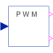

PWMPulseWidthModulation |

|
Diagram
{kind=link}
Information
This information is part of the Modelica Standard Library maintained by the Modelica Association.
Let the user choose the PWM type from:
Parameters (5)
| pwmType |
Value: Modelica.Electrical.PowerConverters.Types.PWMType.SVPWM Type: PWMType Description: PWM Type |
|---|---|
| f |
Value: Type: Frequency (Hz) Description: Switching frequency |
| startTime |
Value: 0 Type: Time (s) Description: Start time of PWM |
| uMax |
Value: Type: Real Description: Maximum amplitude of signal |
| refType |
Value: Modelica.Electrical.PowerConverters.Types.ReferenceType.Triangle3 Type: ReferenceType Description: Type of reference signal |
Connectors (3)
| u |
Type: RealInput[2] Description: Reference space phasor |
|
|---|---|---|
| fire_p |
Type: BooleanOutput[m] Description: positive fire signal |
|
| fire_n |
Type: BooleanOutput[m] Description: negative fire signal |
Components (2)
| svPWM |
Type: SVPWM |
|
|---|---|---|
| intersectivePWM |
Type: IntersectivePWM |
Used in Examples (2)
|
Modelica.Electrical.Machines.Examples.AsynchronousInductionMachines
Test example: AsynchronousInductionMachineSquirrelCage inverter drive |
|
|
Modelica.Electrical.PowerConverters.Examples.DCAC.MultiPhaseTwoLevel
Test of pulse width modulation methods |